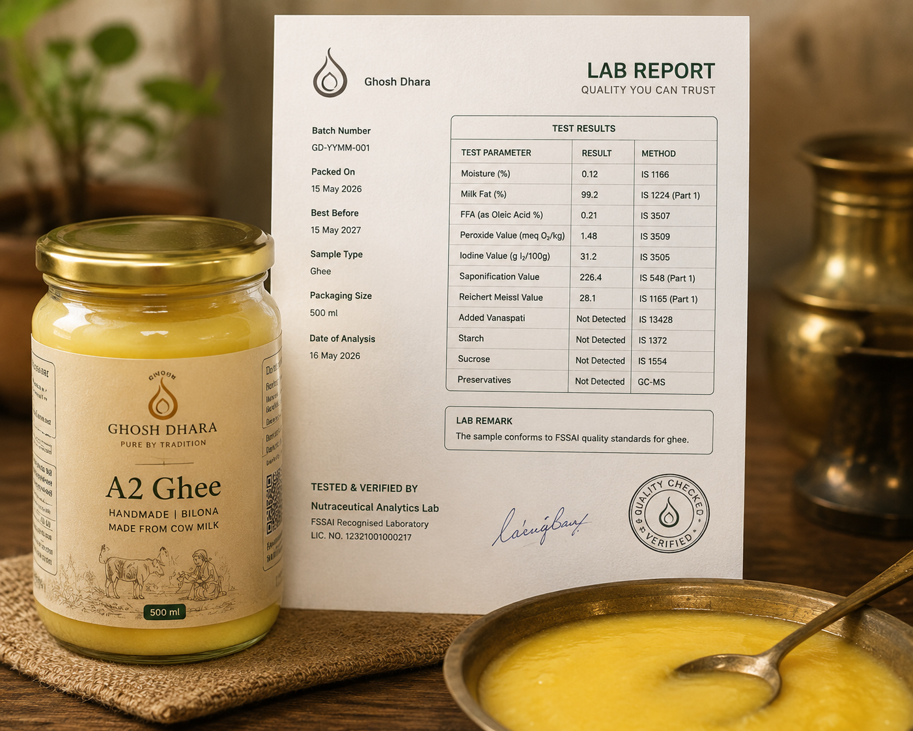
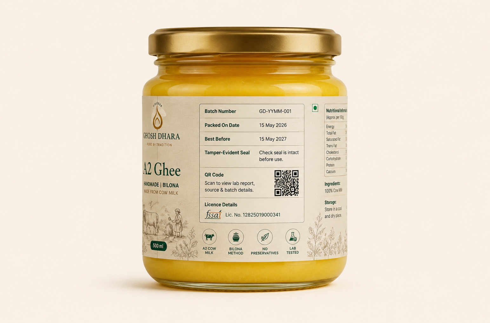

Linked to a Batch
Each available report is connected to a specific batch number, so the information remains relevant to the jar it relates to.
We believe customers should be able to see the verified information available for their batch—not simply take our word for it.
Reports and product information are connected to individual batch codes.

See the information linked to your jar.
A report is not a marketing badge. It is a record of the information tested or documented for a particular batch.
Each available report is connected to a specific batch number, so the information remains relevant to the jar it relates to.
We present report details in simple language while keeping the original verified document available for those who want to review it.
Batch reporting helps create a clearer relationship between how a product is prepared, packed and shared with customers.
Enter the batch number printed on your Ghosh Dhara label, or scan the QR code on the jar to view available information.
A simple, documented path helps keep every batch connected to the information shared with customers.
Ghee is prepared through the brand’s documented process.
The production run receives a unique batch identifier.
Relevant samples or process records are prepared according to the brand’s quality workflow.
Where a verified test report is available, it is reviewed and linked to the relevant batch.
The batch code on the jar helps customers find available product information.
The details printed on your label help keep your purchase connected to its batch information.
Identifies the production run for your jar.
Shows when the jar was packed.
Helps you enjoy the product at its best.

Check that the seal is intact before use.
Connects you to available batch information.
FSSAI Lic. No. [Verified Licence Number]
Ghosh Dhara is committed to presenting product information as clearly as possible. Our goal is not to replace your judgment with marketing—it is to give you better visibility into the jar you choose.
Ingredients: Milk fat. No added colours or preservatives.A batch number identifies a particular production run. Linking information to that code makes it easier to keep product details organised and relevant to the correct jar.
The batch number is printed on your jar label near the packing and best-before details.
Product information and report availability may vary by batch. Please use the number on your jar to view the information available for that specific batch.
Please check the number carefully and try again. If it is still not found, contact Ghosh Dhara support with a photo of your label.
No. The product label remains the essential source for product, storage, ingredient and date information. A report provides additional batch-linked detail where available.
Ghee is a natural dairy product. Minor differences in colour, aroma or texture can occur between batches and may be influenced by normal natural and seasonal variation.
Scan your batch, view available information and enjoy traditional ghee with greater clarity.
Your cart is currently empty.
Continue Shopping